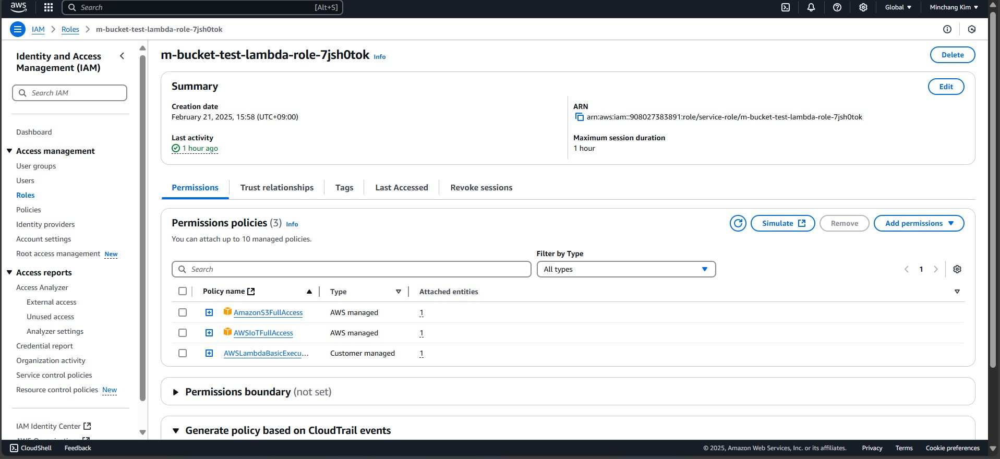

Technical reports¶
유비노스 시작 안내서 (윈도우즈)¶
- 유비노스 관련 문의 및 답변:
유비노스 깃허브 이슈 웹페이지: (https://github.com/ubinos/ubinos.issues)
운영체제 종속적 패키지 설치¶
Chocolatey 설치¶
관리자 권한으로 PowerShell 실행
- 다음 명령어 실행
Set-ExecutionPolicy Bypass -Scope Process -Force; [System.Net.ServicePointManager]::SecurityProtocol = [System.Net.ServicePointManager]::SecurityProtocol -bor 3072; iex ((New-Object System.Net.WebClient).DownloadString('https://community.chocolatey.org/install.ps1'))
PowerShell 창 닫기
필요한 패키지 설치¶
관리자 권한으로 명령 프롬프트(cmd.exe) 실행
- 다음 명령어 실행해 필요한 패키지 설치
choco feature enable -n allowGlobalConfirmationchoco install ninja make gperf git dtc-msys2 wget 7zip python3 python3-virtualenv python311 cmake qemu
명령 프롬프트(cmd.exe) 창 닫기
- 시스템 변수의 PATH에 다음 경로를 추가한다.
- 시스템 변수의 PATH 설정 메뉴
윈도우 설정 -> 시스템 -> 정보 -> 고급 시스템 설정 -> 환경 변수 -> 시스템 변수 -> Path
- 추가할 경로
C:\Program Files\qemu
그림 2 은 경로 설정 예를 보여준다.
일반 사용자 권한으로 명령 프롬프트(cmd.exe) 실행
- 다음 명령을 수행해 git 사용자 이름과 이메일 설정
Note
“Your Name”과 “your-email@example.com”을 본인의 이름과 이메일로 변경해서 실행해야 한다.
git config --global user.name "Your Name" git config --global user.email "your-email@example.com"
명령 프롬프트(cmd.exe) 창 닫기
그림 2 Ubinos Env. Path Setting for Windows 11¶
SSH key 생성 및 github에 등록¶
SSH key 생성¶
일반 사용자 권한으로 명령 프롬프트(cmd.exe) 실행
- 다음 명령어를 실행해 ssh key를 생성
ssh-keygen -t rsa -b 4096file을 입력하라는 메시지가 나오면 엔터를 눌러 기본값을 선택한다.
passphrase를 입력하라는 메시지가 나오면 엔터를 눌러 no passphrase를 선택한다.
- 다음 명령어를 실행해 생성한 공개키를 클립보드에 복사
type %USERPROFILE%\.ssh\id_rsa.pub | clipfile을 기본값인 id_rsa가 아닌 다른 것을 선택했다면 해당 file로 변경해서 실행해야 한다.
명령 프롬프트(cmd.exe) 창 닫기
생성한 SSH 공개키를 github에 등록¶
웹브라우저에서 https://github.com 에 접속한한 후, 로그인
오른쪽 상단의 프로필 사진을 클릭한 후, Settings 클릭
좌측 메뉴에서 SSH and GPG keys 클릭
New SSH key 클릭
Title에 원하는 이름을 입력
Key에 복사한 공개키를 붙여넣기
Add SSH key 클릭
유비노스 소스트리 다운로드 및 개발용 가상환경 생성¶
유비노스 소스트리 다운로드¶
일반 사용자 권한으로 명령 프롬프트(cmd.exe) 실행
- 다음 명령을 실행해 작업용 디렉토리 생성 후 해당 디렉토리로 이동
mkdir C:\MyWorks\ubinos cd C:\MyWorks\ubinos
- 다음 명령어를 실행해 유비노스 소스트리 다운로드
git clone https://github.com/ubinos/ubiworks.git
- 다음 명령어를 실행해 다운로드한 유비노스 소스트리 디렉토리로 이동
cd ubiworks
- 다음 명령어를 실행해 유비노스 소스트리 서브모듈 다운로드
git submodule update --init git submodule foreach git switch ubinos-main
명령 프롬프트(cmd.exe) 창 닫기
개발용 가상환경 생성¶
일반 사용자 권한으로 명령 프롬프트(cmd.exe) 실행
- 다음 명령을 실행해 유비노스 소스트리 make 디렉토리로 이동
cd C:\MyWorks\ubinos\ubiworks\make
- 다음 명령을 실행해 “Ubinos config selecgtor”를 실행
make xsel
- “Ubinos config selecgtor” 창이 뜨면 다음을 선택한 후 Select 버튼을 클릭
ubinos project의 ubinos_venv
- 다음 명령을 실행해 빌드
make rebuildd
- 빌드가 정상적으로 완료되면 다름과 같이 가상환경 활성화, 비활성화 명령이 출력됨
"" "* env activate command: " "C:\MyWorks\ubinos\ubiworks\output\ubinos_venv\Scripts\activate.bat" "" "* env deactivate command: " "deactivate" ""
- 가상환경 활성화 명령을 실행해 ubinos_venv 활성화
C:\MyWorks\ubinos\ubiworks\output\ubinos_venv\Scripts\activate.bat- 위 명령처럼 절대경로로 실행해도 되지만, 아래 명령처럼 상대경로로 실행해도 된다.
..\output\ubinos_venv\Scripts\activate.bat
명령 프롬프트(cmd.exe) 창 닫기
VSCode 설치¶
- 웹브라우저로 다음 URL에 접속해, VSCode를 다운로드 및 설치
GNU ARM Embedded Toolchain 설치¶
- 웹브라우저로 다음 URL에 접속해, gcc-arm-none-eabi-10.3-2021.10-win32.exe를 다운로드 및 설치
-
Note
설치 완료 창이 뜨면 “Add path to environment variable”을 반드시 체크 하고 마침 버튼을 눌려야 한다.
VSCode로 유비노스 소스트리 열기¶
일반 사용자 권한으로 명령 프롬프트(cmd.exe) 실행
- 다음 명령을 실행해 유비노스 소스트리 make 디렉토리로 이동
cd C:\MyWorks\ubinos\ubiworks\make
- 다음 명령을 실행해 유비노스 개발용 가상환경 활성화
..\output\ubinos_venv\Scripts\activate.bat
- 다음 명령을 실행해 VSCode로 유비노스 소스트리 열기
code ..
VSCode로 유비노스 hello_world 예제 선택, 빌드¶
Note
VSCode에서 “Run build task” 등 실행, 각종 View 선택 방법은 VSCode 활용 팁 참조
- VSCode에서 “Run build task” 실행 후, 다음 명령을 선택해 “Ubinos config selecgtor”를 실행
make xsel
- “Ubinos config selecgtor” 창이 뜨면 다음을 선택한 후 Select 버튼을 클릭
ubinos project의 hello_world_netduinoplus2_qemu
- VSCode에서 “Run build task” 실행 후, 다음 명령을 선택해 빌드
make rebuildd
- 빌드가 정상적으로 완료되면 다름과 같이 빌드 정보가 출력됨
[100%] Linking C executable app.elf entry address = 0x0800043c ( 134218812) isr vector start = 0x08000000 ( 134217728) isr vector end = 0x08000188 ( 134218120) isr vector size = 0x00000188 ( 392) bytes relocated isr vector start = 0x20000000 ( 536870912) relocated isr vector end = 0x20000200 ( 536871424) relocated isr vector size = 0x00000200 ( 512) bytes text start = 0x08000000 ( 134217728) text end = 0x080204a0 ( 134349984) text size = 0x000204a0 ( 132256) bytes data start = 0x20000200 ( 536871424) data end = 0x2000053c ( 536872252) data size = 0x0000033c ( 828) bytes bss start = 0x2000053c ( 536872252) bss end = 0x200019e8 ( 536877544) bss size = 0x000014ac ( 5292) bytes heap base = 0x200019e8 ( 536877544) heap limit = 0x2001f800 ( 536999936) heap size = 0x0001de18 ( 122392) bytes stack limit = 0x2001f800 ( 536999936) stack top = 0x20020000 ( 537001984) stack size = 0x00000800 ( 2048) bytes flash start = 0x08000000 ( 134217728) flash size = 0x00100000 ( 1048576) bytes flash usage = 0x000207dc ( 133084) bytes ram start = 0x20000000 ( 536870912) ram size = 0x00020000 ( 131072) bytes ram static usage = 0x000019e8 ( 6632) bytes [100%] Built target app make[1]: Leaving directory 'C:/MyWorks/ubinos/ubiworks/output/hello_world_netduinoplus2_qemu' "" "# [End common-build - hello_world_netduinoplus2_qemu]" "###############################################################################" ""
VSCode로 유비노스 hello_world 예제 실행¶
Note
VSCode에서 “Run build task” 등 실행, 각종 View 선택 방법은 VSCode 활용 팁 참조
- VSCode에서 “Run build task” 실행 후, 다음 명령을 선택해 빌드된 elf 파일을 load
make load정상적으로 load가 완료되면 QEMU과, qemu-system-arm 창이 나타난다.
- VSCode에서 “Run build task” 실행 후, 다음 명령을 선택해 load된 elf 파일을 실행
make xrun정상적으로 실행되면 arm-none-eabi-gdb 창이 뜨고, qemu-system-arm 창에 hello world 메시지가 출력된다.
VSCode로 디버깅하기 위해 필요한 확장 프로그램 설치 및 설정¶
Note
VSCode에서 “Run build task” 등 실행, 각종 View 선택 방법은 VSCode 활용 팁 참조
- VSCode에서 “Extensions” View를 선택한 후, 다음 확장 프로그램을 설치
C/C++ (by Microsoft)
C/C++ Themes (by Microsoft)
C/C++ Extension Pack (by Microsoft)
Python (by Microsoft)
CodeLLDB (by Vadim Chugunov)
ARM Assembly (by dan-c-underwood)
CMake (by twxs)
MemoryView (by mcu-debug)
Open (by sandcastle)
CMake Tools (by Microsoft)
Makefile Tools (by Microsoft)
- 다음 확장 프로그램을 비활성화
CMake Tools (by Microsoft)
Makefile Tools (by Microsoft)
VSCode로 유비노스 hello_world 예제 실행 및 디버깅¶
Note
VSCode에서 “Run build task” 등 실행, 각종 View 선택 방법은 VSCode 활용 팁 참조
VSCode에서 “Run and Debug” View를 선택한 후, “Run and debug” 구성으로 “ARM Target (build load)”을 선택
“F5” 키를 눌러 “Start Debugging” 명령 실행
- VSCode의 Breakpoints 창으로 마우스를 옮기면 나타나는 “+” 버튼을 누른 후, 다음을 입력해 main, appmain 함수 symbol에 breakpoint를 설정
mainappmain
다시 “F5” 키를 눌러 “Continue” 명령 실행
유비노스 라이브러리 업데이트¶
Note
VSCode에서 “Run build task” 등 실행, 각종 View 선택 방법은 VSCode 활용 팁 참조
- VSCode에서 “Run build task” 실행 후, 다음 명령을 선택해 “Ubinos library manager”를 실행
make xmgr
“Ubinos library manager” 창이 뜨면 “Hide ubinos default library list” 체크
“Fetch and check for update all” 버튼 클릭
“Done” 메시지가 뜨면 “OK” 버튼 클릭
- Update 가능한 library 는 “U” 항목이 “O” 로 표시됨
Note
“M” 항목이 “O”로 표시된 라이브러리는 로컬에서 수정된 라이브러리이기 때문에 업데이트가 불가능하다. 업데이트 하려면 해당 라이브러리를 선택한 다음 “Reset” 버튼을 클릭해 로컬에서 수정된 내용을 삭제해야 한다.
Update 가능한 library 가 있으면, 선택 후 “Update” 버튼 클릭 (없으면 이후 과정은 생략)
“Update library commands” 창이 뜨면 “Run” 버튼 클릭
“Success” 메시지가 뜨면 “OK” 버튼 클릭
“Update library commands” 창의 “Close” 버튼 클릭, “Ubinos library manager” 창의 “Close” 버튼 클릭을 차례로 클릭
VSCode 활용 팁¶
단축키¶
- “Run build task” 실행
윈도우: “Ctrl + Shift + B”
리눅스: “Ctrl + Shift + B”
- “Extensions” View 선택
윈도우: “Ctrl + Shift + X”
리눅스: “Ctrl + Shift + X”
- “Run and Debug” View 선택
윈도우: “Ctrl + Shift + D”
리눅스: “Ctrl + Shift + D”
- “Source control” View 선택
윈도우: “Ctrl + Shift + G”, “G”
리눅스: “Ctrl + Shift + G”
- “Explorer” View 선택
윈도우: “Ctrl + Shift + E”
리눅스: “Ctrl + Shift + E”
RX004 라이브러리 사용 안내서¶
RX004 연구모임이 개발한 라이브러리 사용 방법을 설명합니다.
1. 유비노스 및 RX004 라이브러리 설치¶
Note
VSCode에서 “Run build task” 등 실행, 각종 View 선택 방법은 VSCode 활용 팁 참조
1.1. 유비노스 설치¶
디음 과정을 수행해 필요한 패키지들과 소스트리를 설치
윈도우즈: “유비노스 시작 안내서 (윈도우즈)”
1.2. RX004 라이브러리 설치¶
다음을 참조해 VSCode로 유비노스 소스트리 열기
윈도우즈: “VSCode로 유비노스 소스트리 열기”
VSCode에서 “make/liblist.json” 파일 파일 열기
Note
“library/ubinos/make/liblist.json”이 아니고, “make/liblist.json”입니다.
연 파일의 기존 내용을 모두 지우고 아래 내용을 붙여넣기
일반 사용자
추후 공개 예정
RX004 연구모임 1조 (접근 권한 필요, 수정 가능)
[
{
"name": "rx004",
"url": "git@github.com:sogongbang/rx004.git",
"branch_tag_commit": {"type": "branch", "name": "rx004_group01"},
"description": "RX004 library for group 1"
}
]
RX004 연구모임 2조 (접근 권한 필요, 수정 가능)
[
{
"name": "rx004",
"url": "git@github.com:sogongbang/rx004.git",
"branch_tag_commit": {"type": "branch", "name": "rx004_group02"},
"description": "RX004 library for group 2"
}
]
VSCode에서 “Run build task” 실행 후, 다음 명령을 선택해 “Ubinos library manager”를 실행
make xmgr
“Ubinos library manager” 창이 뜨면 “Hide ubinos default library list” 체크
다음 라이브러리들을 체크 하고, “Install” 버튼 클릭
rx004”
“Install library commands” 창이 뜨면 “Run” 버튼 클릭
“Success” 메시지가 뜨면 “OK” 버튼 클릭
“Install library commands” 창의 “Close” 버튼 클릭, “Ubinos library manager” 창의 “Close” 버튼 클릭을 차례로 클릭
2. RX004 라이브러리 사용 방법¶
Note
VSCode에서 “Run build task” 등 실행, 각종 View 선택 방법은 VSCode 활용 팁 참조
2.1. RX004 Home 문서 편집, 빌드, 결과물 확인¶
다음을 참조해 VSCode로 유비노스 소스트리 열기
윈도우즈: “VSCode로 유비노스 소스트리 열기”
다음 디렉토리 아래의 RX004 Home 문서 편집
“library/rx004/doc/rx004_home/doc”
VSCode에서 “Run build task” 실행 후, 다음 명령을 선택해 “Ubinos config selecgtor”를 실행
make xsel
“Ubinos config selecgtor” 창이 뜨면 다음을 선택한 후 Select 버튼을 클릭
rx004 project의 rx004_home_html
VSCode에서 “Run build task” 실행 후, 다음 명령을 선택해 빌드 실행
make rebuildd
VSCode에서 “Run build task” 실행 후, 다음 명령을 선택해 결과물 확인
make xrun
2.2. RX004 수정 내용을 github에 올리기¶
VSCode에서 “Source control” View를 선택
“Source control” View 상단의 “…”을 클릭한 후 “Repositories”를 체크
“Source control” View의 “Repositories” 창에서 “rx004” 선택
“Source control” View의 “Changes” 창에서 github에 올릴 파일들을 선택
우클릭 후 “Stage Changes” 선택
“Source control” View의 “Commit” 버튼 위에 메시지 입력
“Source control” View의 “Commit” 버튼 클릭
“Sync Changes” 버튼 클릭
확인 창이 뜨면 “OK” 버튼 클릭
연구과제004-01 제안서¶
연구 목적¶
초저전력 IoT 장치를 위한 LoRaWAN 기반 무선 통신망을 구축한다.

그림 3 RX004-01 overview diagram¶
연구 내용¶
단말장치 개발¶
- RAK WisBlock Starter Kit을 사용해 개발
RAK에서 제공하는 개발키트와 예제 사용
웹페이지: https://docs.rakwireless.com/product-categories/wisblock/rak11310/overview
보드: RAK11310 WisBlock LPWAN Module (RP2040 MCU)
통신: LoRAWAN KR920
센서: 온도 습도 센서 (SHTC3)
소프트웨어 개발 환경: Arduino IDE (C/C++) 또는 Ubiworks(C/C++)
- 요구 사항
설정된 주기로 온도 습도 데이터를 수집해 서버로 전송
게이트웨이 개발¶
- RAK WisGate Developer D4H+ Kit 개발
RAK에서 제공하는 개발키트와 예제 사용
웹페이지: https://docs.rakwireless.com/product-categories/wisgate/rak7248/overview
보드: Raspberry Pi 4
통신: LoRAWAN KR920, WiFi
소프트웨어 개발 환경: Linux console (C/C++) 또는 Ubiworks(C/C++)
- 요구 사항
단말장치가 전송하는 데이터를 MQTT 프로토콜을 사용해 서버로 전달
서버 개발¶
- AWS IoT Core for LoRaWAN를 사용해 개발
RAK에서 제공하는 개발키트와 예제 사용
소프트웨어 개발 환경: AWS IoT console (Python)
- 요구 사항
단말장치들이 전송하는 데이터를 받아서 데이터베이스에 저장
저장된 데이터 그래프로 시각화
결과물¶
결과 보고서
소스 코드
데모 가능한 단말장치, 게이트웨어, 서버 세트
예상 일정¶
3주
연구과제004-02 제안서¶
연구 목적¶
에너지 수확을 통해 베터리 교체 없이 반 영구적으로 동작하는 저해상도 적외선 카메라 IoT 시험망을 구축한다.

그림 4 RX004-02 overview diagram¶
연구 내용¶
단말 장치에 태양광 패널을 사용한 에너지 수확 기능 추가¶
- 연구과제004-01에서 개발한 단말 장치에 태양광 패널을 사용한 에너지 수확 기능 추가
RAK에서 제공하는 개발키트와 예제 사용
웹페이지: https://store.rakwireless.com/products/unify-enclosure-ip65-100x75x38-solar
- 요구 사항
태양광으로 에너지를 수확해 단말 장치가 동작할 수 있도록 함
단말 장치에 저해상도 적외선 카메라 기능 추가¶
- 연구과제004-01에서 개발한 단말 장치에 저해상도 적외선 카메라 기능 추가
RAK에서 제공하는 개발키트와 예제 사용
웹페이지: https://store.rakwireless.com/products/32x24-pixel-mlx90640-ir-array-module-rak12052
소프트웨어 개발 환경: Arduino IDE (C/C++) 또는 Ubiworks(C/C++)
- 요구 사항
설정된 주기로 적외선 카메라 영상 파일을 서버로 전송
서버에 영상 데이터 저장 기능 추가¶
- 연구과제004-01에서 개발한 서버에 영상 데이터 저장 기능 추가
소프트웨어 개발 환경: AWS IoT console (Python)
- 요구 사항
단말장치들이 전송하는 영상을 받아서 파일시스템에 저장
결과물¶
결과 보고서
소스 코드
데모 가능한 단말장치, 게이트웨어, 서버 세트
예상 일정¶
3주
연구과제004-01 결과 보고서 01조¶
목표¶
센서로 수집한 온도와 습도 데이터를 게이트웨이를 통해 MQTT메세지로 전달하여 lambda function으로 가공하고 DynamoDB에 저장한다.
과정¶
참고 링크: RAK 1901 guide, RAK 7248 guide, RAK 4631 guide, Arduino, adding the BSP in Arduino IDE, LoRa Basic Station, online guide, RAK 7268 guide, Storing device data in a DynamoDB table, DynamoDB console, IoT Core, Lambda console, Formatting a notification by using an AWS Lambda function, IAM console
- 하드웨어 세팅
- RAK 1901 설정
RAK 1901 guide 에 접속한다.
Hardware Setup 항목을 보고 칩을 보드에 부착한다.
그림 5 부착 위치¶
usb 케이블로 컴퓨터와 연결한다.
- RAK 7284 설정
RAK 7248 guide 에 접속한한다.
DAtasheet 탭에 들어가서 LoRa Antenna 위치를 확인하고 안테나를 연결한다.
그림 6 안테나 위치¶
전원 케이블로 전원을 연결한다.
- 소프트웨어 세팅
- 게이트웨이 설정
RAK 7248 guide 에 접속한다.
Quick Start Guide 탭에 들어가 가이드를 수행한다.
설정을 마치면 wifi 또는 이더넷을 통해 게이트웨이에 접속할 수 있다.
그림 7 게이트웨이에 접속한 모습¶
LoRa Basic Station 에 접속한다.
Quick Start 탭에 들어가서 가이드를 수행한다.
- 게이트웨이 등록
AWS의 online guide 에 접속한다.
AWS IoT Core for LoRaWAN - Connecting to AWS IoT Core for LoRaWAN - Onboard your gateways to AWS IoT Core for LoRaWAN - Add a gateway to AWS IoT Core for LoRaWAN항목에 들어간다.
Add a gateway using the console 가이드를 수행한다. 이때 gateway’s EUI가 필요한데 putty로 게이트웨이에 접속하고 다음 코드를 입력해서 나온 화면 상단에 EUI가 나온다.(예: gateway ID:xxxxxxxxxx)
sudo gateway -config
가이드를 수행하면 게이트웨이가 AWS에 등록된 것을 확인할 수 있다.
그림 8 게이트웨이가 추가된 모습¶
online guide 에서 AWS IoT Core for LoRaWAN - Connecting to AWS IoT Core for LoRaWAN - Onboard your gateways to AWS IoT Core for LoRaWAN - Consider frequency band selection and add necessary IAM role에 들어가 가이드를 수행한다.
- 게이트웨이 연결 테스트
RAK 7248 guide 에 접속한다.
LoRaWAN Network Server Guide 탭에 들어가 스크롤 하면 Configure the Gateway Device가 보이는데 여기서부터 진행하면 된다.
가이드를 모두 진행하면 게이트웨이의 connection status가 connected로 바뀐다.
그림 9 게이트웨이가 연결된 모습¶
- 디바이스 설정
Arduino 홈페이지에 접속하여 소프트웨어를 다운받는다.
설치를 완료했으면 adding the BSP in Arduino IDE 사이트에 들어가 기본 설정을 마친다.
RAK 1901 guide 에 들어가서 Quick Start Guide 탭에 Software Configuration and Example 부분을 수행한다.
시리얼 모니터에 온도와 습도가 출력되는 것을 확인한다.
그림 10 온도와 습도를 측정하고 시리얼 모니터에 출력¶
RAK 4631 guide 에 접속한다.
Quick Start Guide 탭에 Connecting RAK4631 to LoRaWAN 항목을 찾아서 과정을 따라한다.
- 가이드에 코드를 수정하는 부분이 나오는데 다음 부분들을 수정하고 나머지는 그대로 둔다.
region
LoRaMacRegion_t g_CurrentRegion = LORAMAC_REGION_KR920;
key
# 3가지 모두 본인이 뭔하는 값으로 수정 uint8_t nodeDeviceEUI[8] = {0x88, 0x88, 0x88, 0x88, 0x88, 0x88, 0x33, 0x33}; uint8_t nodeAppEUI[8] = {0xB8, 0x27, 0xEB, 0xFF, 0xFE, 0x39, 0x00, 0x00}; uint8_t nodeAppKey[16] = {0x88, 0x88, 0x88, 0x88, 0x88, 0x88, 0x88, 0x88, 0x88, 0x88, 0x88, 0x88, 0x88, 0x88, 0x88, 0x88};
- 디바이스 등록
RAK 7268 guide 에 접속해서 LNS Guide 탭에 들어간다.
- 스크롤을 내려 Add a LoRaWAN Device to AWS IoT 항목을 찾아서 가이드를 수행한다. 이때 다음 설정들은 아래의 설정을 따른다.
Device Profile에서 MAC version을 1.0.2로 설정
Add Device - Configure LoRaWAN device에서 OTAA v1.0.x 선택
DevEUI, Appkey, AppEUI는 아두이노에서 본인이 설정한 값을 입력
Add Device까지 마무리 했다면 스크롤을 내려 Verifying Operation 항목을 찾아서 lambda function과 Destination Rule을 추가한다.
모두 완료했으면 IoT Core에 디바이스가 추가된 것을 확인할 수 있다.
그림 11 디바이스가 등록된 모습¶
- 디바이스 통신 테스트
게이트웨이와 디바이스 설정을 모두 마치면 디바이스에서 보낸 메세지를 AWS의 MQTT Test client에서 받아볼 수 있다.
게이트웨이에서 basic station을 실행한다.
cd basicstation/examples/corecell/
./start-station.sh —l ./lns-aws
디바이스 설정에서 수정한 아두이노 코드를 업로드한다.
IoT Core에 들어가 Test - MQTT test Client에 들어간다.
topic filter에 #을 입력하고 구독한다.
payloadData에 base64로 인코딩된 메세지가 도착한다.
디코딩 해보면 hello!가 나온다. (아두이노 예제가 hello!를 보내는 예제다.)
그림 12 메세지를 받은 모습¶
그림 13 디코딩 사이트를 통해 메세지 확인¶
- 온도와 습도 데이터를 받아서 DynamoDB에 저장하기
- 아두이노 코드 수정
온도 습도를 측정하여 시리얼 모니터에 출력하는 예제와 LoRaWAN 예제를 합친다.
이제는 hello! 가 아닌 온도와 습도데이터를 보내야 하므로 void send_lora_frame(void)를 다음과 같이 수정한다.
# 온도와 습도를 문자열로 전송하는 코드 void send_lora_frame(void) { if (lmh_join_status_get() != LMH_SET) { // Not joined, try again later return; } memset(m_lora_app_data.buffer, 0, LORAWAN_APP_DATA_BUFF_SIZE); m_lora_app_data.port = gAppPort; uint32_t i = 0; //온도 데이터 전송 float temp = g_shtc3.toDegC(); char tem[10]; sprintf(tem,"%.2f",temp); for (uint8_t k = 0; tem[k] != '\0'; k++) { m_lora_app_data.buffer[i++] = tem[k]; // 문자 한 개씩 전송 } //구분자 m_lora_app_data.buffer[i++] = '|'; //습도 데이터 전송 float humi = g_shtc3.toPercent(); char str[10]; sprintf(str,"%.2f",humi); for (uint8_t k = 0; str[k] != '\0'; k++) { m_lora_app_data.buffer[i++] = str[k]; // 문자 한 개씩 전송 } m_lora_app_data.buffsize = i; // 데이터 크기 설정 // LoRaWAN 패킷 전송 lmh_error_status error = lmh_send(&m_lora_app_data, g_CurrentConfirm); if (error == LMH_SUCCESS) { count++; Serial.printf("lmh_send ok count %d\n", count); } else { count_fail++; Serial.printf("lmh_send fail count %d\n", count_fail); } }
- lambda 설정
Formatting a notification by using an AWS Lambda function 가이드를 참고하며 만든다.
Lambda console 에 접속하고 Creat function을 선택한다.
Use a blueprint를 선택한다
Blueprint name은 Hello world function python 3.10 선택
Function name은 ()
Execution role에 Create a new role from AWS policy templates을 선택한다.
Role name은 ()
Policy templates - optional 은 공백으로 둔다.
Create function 선택한다.
code에 다음을 입력한다.
import json import base64 import boto3 # AWS IoT Core 클라이언트 설정 (리전에 맞게 변경) client = boto3.client("iot-data", region_name="us-east-1") # 필요하면 리전 변경 # MQTT 설정 (입력/출력 토픽) INPUT_TOPIC = "project/sensor/decoded" # 입력 토픽 OUTPUT_TOPIC = "project/sensor/output" # 출력 토픽 (디코딩된 메시지를 전송할 토픽) def lambda_handler(event, context): try: print("Received event:", json.dumps(event)) # 로그 출력 # PayloadData 디코딩 if "PayloadData" in event: decoded_payload = base64.b64decode(event["PayloadData"]).decode("utf-8") print(f"Decoded Payload: {decoded_payload}") # temperature랑 humidity 분리 if "|" in decoded_payload: # 구분자가 있을 때만 분리 temp, humi = decoded_payload.split("|", 1) # '|' 구분자로 분리 print(f"temp: {temp}, humi: {humi}") else: # 혹시라도 안 될때 긴급조치 temp = decoded_payload[:4] # 숫자 "10" humi = decoded_payload[4:] # 나머지 문자열 ":humi" # humidity 뒤에 "%" 추가 humi = humi + " %" # "%" # temp 뒤에 "def C" 추가 temp = temp + " deg C" # "deg C" # MQTT에 디코딩된 값 전송 response = client.publish( topic=OUTPUT_TOPIC, qos=1, payload=json.dumps({"temp": temp, "humi": humi}) ) print(f"Published to {OUTPUT_TOPIC}: temp: {temp}, humi: {humi}") return { "statusCode": 200, "body": json.dumps("Message processed and sent!") } else: return { "statusCode": 400, "body": json.dumps("PayloadData not found in event") } except Exception as e: print(f"Error: {str(e)}") return { "statusCode": 500, "body": json.dumps(f"Error: {str(e)}") }
IAM console 의 왼쪽 메뉴창에 Policies를 선택한다.
Create policy를 선택한다.
JSON을 열고 아래 코드를 붙여넣기한다.
{ "Version": "2012-10-17", "Statement": [ { "Effect": "Allow", "Action": [ "iot:Publish", "iot:Receive", "iot:Subscribe", "iot:Connect" ], "Resource": "*" }, { "Effect": "Allow", "Action": "logs:CreateLogGroup", "Resource": "*" }, { "Effect": "Allow", "Action": [ "logs:CreateLogStream", "logs:PutLogEvents" ], "Resource": "*" } ] }
Next를 선택한다.
Policy details에서 policy name ()을 입력한다.
Create policy 선택
IAM console 의 왼쪽 메뉴창에 Roles를 선택한다.
이전에 만든 Lamdafuction에 있는 Role과 동일한 이름의 Role을 선택한다.
Permissions policies에서 add permissions을 선택 attach policy를 선택한다.
미리 만들어둔 policy를 체크 박스 선택한 뒤, Add permissions를 선택한다.
- DynamoDB 설정
Storing device data in a DynamoDB table 가이드를 참고하며 만든다.
DynamoDB console 에 접속하고 Creat table을 선택한다.
Table name에 본인이 원하는 이름를 입력한다.
Partition key에 sample_time을 입력하고 오른쪽에 String 대신 Number를 선택한다.
Sort key는 건드리지 않는다.
아래에 Create table을 선택한다.
그림 14 테이블이 생성된 모습¶
IoT Core 에 접속해서 Message routing - Rules에 들어간다.
Create rule을 선택한다.
Rule name에 본인이 원하는 이름을 입력하고 next를 선택한다.
SQL version은 2016-03-23을 선택하고 다음 코드를 입력한다.
SELECT temp, humi FROM 'project/sensor/output'
next를 선택하고, Rule actions - Action 1에 DynamoDB를 선택한다.
Table name에 본인이 만든 테이블을 선택한다.
partition key에 sample_time을 입력한다.
partition key type을 Number로 변경한다.
partition key value에 ${timestamp()}을 입력한다.
Write message data to this column에 device_data를 입력한다.
아래에 IAM role에서 Creat new role을 선택한다.
Role ame에 본인이 원하는 이름을 입력하고 create를 선택한다.
next를 선택하고 create를 선택한다.
그림 15 rule이 추가된 모습¶
결과¶
- 동작흐름
디바이스가 온도, 습도 데이터를 수집하고 게이트웨이를 통해 mqtt메세지를 보냄
AWS에서 project/sensor/decoded로 메세지가 들어옴
lambda function이 project/sensor/decoded topic을 감지하여 메세지를 디코딩하고 project/sensor/output으로 다시 mqtt 메세지를 보냄
DynamoDB에서 설정해준 rule에 따라 project/sensor/output에서 보낸 온도 습도 데이터를 수집하여 DB에 저장
- 결산
- 센서로 수집한 온도와 습도 데이터를 게이트웨이를 통해 MQTT메세지로 전달하여 lambda function으로 가공하고 DynamoDB에 저장한다.
–> 성공
- 고찰
온도 습도 데이터를 그냥 float으로 보내면 디코딩 과정에서 숫자가 아닌 의미 없는 문자열이 나와서 어쩔 수 없이 아두이노에서 실수를 강제로 문자열로 바꿔 보내서 lambda function으로 처리한 부분이 조금 아쉽다. 이 부분을 수정하면 좋을 것 같다.
연구과제004-01 결과 보고서 02조¶
개요¶
본 보고서는 RAK4630을 디바이스로, RAK7248을 게이트웨이로 등록하여 LoRaWAN을 통해 AWS IoT Core에 연결하고, 수집된 데이터를 MQTT를 통해 DynamoDB에 저장하는 과정에 대한 내용을 다룬다. 기초 설정, 예제 코드 실행, 실전 코드 실행을 포함한 전반적인 과정이 정리되어 있다.
RAK7248 사전 준비¶
RAK7248의 초기 설정은 AP모드 이므로 노트북으로 게이트웨이에 putty에 RAK7248의 기본 ip인 192.168.230.1로 접근 한다.
이후 사용자 이름: pi 비밀번호:raspberry를 입력하여 로그인 한 후, sudo gateway-config를 입력하여 게이트웨이 설정으로 이동한다.
이후 거주 국가를 선택한다. ap모드를 해제한 후 클라이언트 모드로 변경한다. 이후 연결할 와이파이 SSID와 비밀번호를 입력한다.
이제 와이파이에 연결된 RAK7248의 ip주소를 putty에 입력하면 콘솔에 접근할 수 있다.
aws iot core에 gateway RAK7248 등록
LoRaWAN을 위해 AWS IoT Core에 게이트웨이를 등록하려면 다음 단계를 실행하세요.
AWS IOT 콘솔 로 이동합니다.
왼쪽 탐색 패널에서 LPWAN 장치를 선택하세요.
게이트웨이를 선택한 다음 게이트웨이 추가를 클릭합니다.
게이트웨이 추가 섹션 에서 게이트웨이의 EUI 및 주파수 대역(RF 지역) 필드를 입력합니다.
이름 : 선택 필드 에 설명적 이름을 입력합니다 . 이름으로 GatewayEUI를 사용하는 것이 좋습니다.
게이트웨이 추가를 클릭합니다.
게이트웨이 구성 페이지 에서 게이트웨이 인증서 라는 섹션을 찾으세요.
인증서 만들기를 선택하세요.
인증서가 생성되어 게이트웨이 메시지와 연결 되면 인증서 파일 다운로드를 선택하여 인증서( xxxxx.cert.pem )와 개인 키( xxxxxx.private.key )를 다운로드합니다.
자격 증명 프로비저닝 섹션에서 서버 신뢰 인증서 다운로드를 선택하여 CUPS(cups.trust) 및 LNS(lns.trust) 서버 신뢰 인증서를 다운로드합니다.
CUPS 및 LNS 엔드포인트를 복사하여 .txt게이트웨이를 구성하는 동안 사용할 파일에 저장합니다.
제출을 선택하여 게이트웨이를 추가합니다.
그림 18 인증서 파일들
그림 18 인증서 파일들¶
게이트웨이 디바이스 구성
LoRaWAN용 AWS IoT Core에 연결하려면 BasicsStation을 다운로드하고 컴파일해야 합니다. SSH를 통해 게이트웨이에 성공적으로 액세스했다고 가정하면 업데이트/업그레이드하는 것이 좋은 정책입니다. 그렇게 하면 모든 패키지가 최신 상태로 유지됩니다:
sudo apt update sudo apt upgrade
이제 LoRaWAN용 AWS IoT Core에서 게이트웨이를 등록합니다. 게이트웨이를 등록하려면 장치의 EUI가 필요합니다. 게이트웨이의 EUI를 찾으려면 아래 명령을 실행하여 그래픽 사용자 인터페이스(GUI)를 엽니다. EUI는 GUI 상단에서 찾을 수 있습니다:
sudo gateway-config
또한 다음 명령을 실행하여 게이트웨이 버전을 확인할 수도 있습니다:
sudo gateway-version
출력 예시:
Raspberry Pi 4 Model B Rev 1.1, OS "10 (buster)", 5.4.79-v7l+.
RAKwireless gateway RAK7248 no LTE version 4.2.7R install from firmware
Gateway ID: DCA632FFFE366417
기본 스테이션(Basics Station) 구성
Basics Station 저장소를 복제하고 다운로드한 폴더로 이동합니다:
git clone https://github.com/lorabasics/basicstation.git
cd basicstation
모든 종속성을 설치합니다:
make platform=corecell variant=std
특정 파일을 복사하여 교체합니다:
sudo cp -f /opt/ttn-gateway/sx1302_hal/libloragw/src/loragw_stts751.c deps/lgw1302/platform-corecell/libloragw/src/loragw_stts751.c
빌드를 정리하고 다시 컴파일합니다:
make clean
make platform=corecell variant=std
설치가 완료되면 Basics Station 프로토콜을 구성해야 합니다. Semtech에서 제공한 예제가 있는 폴더를 입력하고, 특히 빌드가 SX1302용이므로 corecell 폴더를 입력합니다.
cd examples/corecell
reset_gw.sh를 수정하여 리셋 핀을 17로 변경하세요 .
#!/bin/sh
# This script is intended to be used on SX1302 CoreCell platform, it performs the following actions:
# - export/unexport GPI023 and GPI018 used to reset the SX1302 chip and to enable the LDOs
#
# Usage examples:
# ./reset_lgw.sh stop
# ./reset_lgw.sh start
#
# GPIO mapping has to be adopted with HW
#
SX1302_RESET_PIN=17
SX1302_POWER_EN_PIN=18
WAIT_GPIO() {
sleep 0.1
}
LoRaWAN을 위한 AWS IoT Core에 연결하기 위한 기본 스테이션의 모든 구성 파일을 저장할 새 폴더를 만듭니다.
mkdir lns-aws
기본 스테이션 구성 파일을 복사합니다:
cp lns-ttn/station.conf lns-aws/
이전에 다운로드한 인증서를 추가합니다:
ls -all lns-aws
그림 19 cups.trust와 cups.uri

그림 19 cups.trust와 cups.uri¶
그림 20 cups.crt와 cups.key

그림 20 cups.crt와 cups.key¶
출력 예시: 그림 21
그림 21 모든 설치가 끝난 후의 파일들¶
기본 스테이션을 사용하기 전에 기존 패킷 포워더를 비활성화해야 합니다. 패킷 포워더의 서비스를 편집하려면 다음을 실행합니다:
sudo systemctl edit ttn-gateway.service
[Unit]
Description=The Things Network Gateway
[Service]
WorkingDirectory=/opt/ttn-gateway/packet_forwarder/lora_pkt_fwd/
ExecStart=/opt/ttn-gateway/packet_forwarder/lora_pkt_fwd/start.sh
SyslogIdentifier=ttn-gateway
Restart=no
RestartSec=5
[Install]
WantedBy=multi-user.target
파일에 다음 설정을 추가합니다:
[Unit]
Description=The Things Network Gateway
[Service]
WorkingDirectory=/opt/ttn-gateway/packet_forwarder/lora_pkt_fwd/
ExecStart=/opt/ttn-gateway/packet_forwarder/lora_pkt_fwd/start.sh
SyslogIdentifier=ttn-gateway
Restart=no
RestartSec=5
[Install]
WantedBy=multi-user.target
변경 사항을 적용하려면 다음 명령을 실행합니다:
sudo systemctl daemon-reload
sudo systemctl restart ttn-gateway.service
기존 패킷 포워더 프로세스를 종료하려면 다음 명령을 실행합니다:
pi@rak-gateway:~/basicstation/example/corecell/lns-aws $ ps aux | grep ttn-gateway
출력된 프로세스 ID(PID)를 찾아 종료합니다:
sudo kill <PID>
이제 기본 스테이션을 시작할 수 있습니다. 구성 폴더로 이동한 후 실행합니다:
cd ..
./start-station.sh -l ./lns-aws
모든 것이 올바르게 구성되었다면, 게이트웨이는 AWS IoT Core for LoRaWAN 콘솔에서 온라인 상태로 나타나야 합니다.
그림 22 aws iot core에 connected된 화면
그림 22 aws iot core에 connected된 화면¶
RAK4630 사전 준비¶
아두이노 IDE를 다운받는다.
RAK1901을 RAK4630에 부착한다.
그림 23 부착부분
그림 23 RAK1901¶
Arduino IDE를 연다. 환경 설정으로 간다.
Arduino Boards 목록에 WisBlock Core를 추가하려면 추가 Board Manager URL을 편집해야 한다.
이 URL을 복사하여 https://raw.githubusercontent.com/RAKwireless/RAKwireless-Arduino-BSP-Index/main/package_rakwireless_index.json그림 에 표시된 대로 필드에 붙여넣는다. 다른 URL이 이미 있는 경우 다음 줄에 추가하기만 하면 된다. URL을 추가한 후 확인을 클릭한다.
그림 24 URL추가하는 부분

그림 24 URL추가¶
Arduino IDE를 다시 시작한다. 도구 메뉴에서 보드 관리자를 연다.
그러면 Arduino 보드 목록에 추가할 수 있는 사용 가능한 RAKwireless WisBlock Core 보드가 표시된다. 보유한 WisBlock Core를 선택하고 드롭다운 목록에서 업데이트된 버전을 선택한 다음 설치를 클릭한다. (RAKwireless RUI nRF)
먼저, 자신이 가지고 있는 WisBlock Core를 선택해야 한다. (RAK4630)
SparkFun SHTC3 라이브러리를 설치한다 .
올바른 직렬 포트를 선택하고 코드를 업로드할 수 있다.
#include "SparkFun_SHTC3.h" //Click here to get the library: http://librarymanager/All#SparkFun_SHTC3
SHTC3 g_shtc3; // Declare an instance of the SHTC3 class
void errorDecoder(SHTC3_Status_TypeDef message) // The errorDecoder function prints "SHTC3_Status_TypeDef" resultsin a human-friendly way
{
switch (message)
{
case SHTC3_Status_Nominal:
Serial.print("Nominal");
break;
case SHTC3_Status_Error:
Serial.print("Error");
break;
case SHTC3_Status_CRC_Fail:
Serial.print("CRC Fail");
break;
default:
Serial.print("Unknown return code");
break;
}
}
void shtc3_read_data(void)
{
float Temperature = 0;
float Humidity = 0;
g_shtc3.update();
if (g_shtc3.lastStatus == SHTC3_Status_Nominal) // You can also assess the status of the last command by checking the ".lastStatus" member of the object
{
Temperature = g_shtc3.toDegC(); // Packing LoRa data
Humidity = g_shtc3.toPercent();
Serial.print("RH = ");
Serial.print(g_shtc3.toPercent()); // "toPercent" returns the percent humidity as a floating point number
Serial.print("% (checksum: ");
if (g_shtc3.passRHcrc) // Like "passIDcrc" this is true when the RH value is valid from the sensor (but not necessarily up-to-date in terms of time)
{
Serial.print("pass");
}
else
{
Serial.print("fail");
}
Serial.print("), T = ");
Serial.print(g_shtc3.toDegC()); // "toDegF" and "toDegC" return the temperature as a flaoting point number in deg F and deg C respectively
Serial.print(" deg C (checksum: ");
if (g_shtc3.passTcrc) // Like "passIDcrc" this is true when the T value is valid from the sensor (but not necessarily up-to-date in terms of time)
{
Serial.print("pass");
}
else
{
Serial.print("fail");
}
Serial.println(")");
}
else
{
Serial.print("Update failed, error: ");
errorDecoder(g_shtc3.lastStatus);
Serial.println();
}
}
void setup()
{
time_t timeout = millis();
Serial.begin(115200);
while (!Serial)
{
if ((millis() - timeout) < 5000)
{
delay(100);
}
else
{
break;
}
}
Wire.begin();
Serial.println("shtc3 init");
Serial.print("Beginning sensor. Result = "); // Most SHTC3 functions return a variable of the type "SHTC3_Status_TypeDef" to indicate the status of their execution
errorDecoder(g_shtc3.begin()); // To start the sensor you must call "begin()", the default settings use Wire (default Arduino I2C port)
Wire.setClock(400000); // The sensor is listed to work up to 1 MHz I2C speed, but the I2C clock speed is global for all sensors on that bus so using 400kHz or 100kHz is recommended
Serial.println();
if (g_shtc3.passIDcrc) // Whenever data is received the associated checksum is calculated and verified so you can be sure the data is true
{ // The checksum pass indicators are: passIDcrc, passRHcrc, and passTcrc for the ID, RH, and T readings respectively
Serial.print("ID Passed Checksum. ");
Serial.print("Device ID: 0b");
Serial.println(g_shtc3.ID, BIN); // The 16-bit device ID can be accessed as a member variable of the object
}
else
{
Serial.println("ID Checksum Failed. ");
}
}
void loop()
{
shtc3_read_data();
delay(1000);
}
그림 25 온,습도 예제 업로드 결과

그림 25 실행결과¶
aws iot core에 디바이스 프로필 추가
AWS IOT 콘솔 로 이동한다. 탐색 창에서 LPWAN devices(LPWAN 디바이스)를 선택한 다음 Profiles(프로필)를 클릭한다.
Device Profiles(디바이스 프로필)추가를 클릭하고 매개변수를 설정한다.
Add service profile(서비스 프로필 추가)을 클릭하고 필요에 따라 매개 변수를 설정한다.
그림 26 디바이스 프로필 추가한 모습

그림 26 디바이스프로필¶
그림 27 서비스 프로필 추가한 모습

그림 27 서비스프로필¶
대상에 IAM 역할 추가
AWS IOT 콘솔 로 이동한다. 탐색 창에서 정책(Policies)을 선택한다.
[Create Policy]를 선택한 다음 [JSON] 탭을 선택하여 정책 편집기를 연다. 기존 템플릿을 다음 신뢰 정책 문서로 바꾼다.
{
"Version": "2012-10-17",
"Statement": [
{
"Effect": "Allow",
"Action": [
"iot:DescribeEndpoint",
"iot:Publish"
],
"Resource": "*"
}
]
}
다음을 클릭하고 Review and create(검토 및 만들기) 페이지에서 선택한다. 이름에 원하는 이름을 입력한다.
[Description]에 원하는 설명을 입력한다.
정책 생성을 선택한다. 정책이 생성되었음을 나타내는 확인 메시지가 표시된다.
(역할 생성)
탐색 창에서 [Roles]를 선택하여 [Roles] 페이지를 연다.
[Create Role]을 선택한다.
[Create Role] 페이지에서 [AWS account] > [Another AWS account]를 선택한다.
계정 ID를 입력하고 다음을 선택한다.
검색 창에 정책 이름을 입력하여 방금 생성한 IAM 정책을 검색한다.
검색 결과에서 정책에 해당하는 확인란을 선택한다. 다음을 클릭한다.
[Role name]에 원하는 적절한 이름을 입력한다.
[Description]에 원하는 설명을 입력한다.
[Create role]을 선택한다. 역할이 생성되었음을 나타내는 확인 메시지가 표시된다.
(신뢰정책 업데이트)
탐색 창에서 [Roles]를 선택하여 [Roles] 페이지를 연다.
검색 창에서 이전에 생성한 역할의 이름을 입력하고 검색 결과에서 역할 이름을 클릭한다. 그러면 요약 페이지가 열린다.
신뢰 관계(Trust relationships) 탭을 선택하여 신뢰 관계(Trust relationships) 페이지로 이동한다.
신뢰 정책 편집을 클릭한다. 신뢰 정책 문서의 보안 주체 AWS 역할은 기본적으로 root로 설정되며 변경해야 한다. 기존 정책을 다음으로 바꾼다.
{
"Version": "2012-10-17",
"Statement": [
{
"Sid": "",
"Effect": "Allow",
"Principal": {
"Service": "iotwireless.amazonaws.com"
},
"Action": "sts:AssumeRole",
"Condition": {}
}
]
}
정책 업데이트를 선택한다.
대상 설정
탐색 창에서 LPWAN 디바이스(LPWAN devices)를 선택한 다음 대상(Destinations)을 선택한다.
[Add Destination]을 선택한다.
대상 이름에 ProcessLoRa를 입력한 다음 대상 설명 - 선택 사항 아래에 적절한 설명을 추가한다.
규칙 이름에 LoRaWANRouting을 입력한다. 규칙 구성 – 지금은 선택 사항 섹션을 무시한다.
[Permissions] 섹션에서 [Select an existing service role]을 선택하고 드롭다운에서 이전에 생성한 IAM 역할을 선택한다.
[Add Destination]을 선택한다. 대상이 성공적으로 추가되었음을 나타내는 “Destination added(대상이 추가됨)” 메시지가 표시된다.
대상 규칙
AWS IOT 콘솔 로 이동한다.
탐색 창에서 메시지 라우팅(Message routing)을 선택한 다음 규칙(Rules)을 선택한다.
규칙(Rules) 페이지에서 규칙 생성(Create rule)을 선택한다.
- Create a rule(규칙 생성) 페이지에서 다음과 같이 입력한다.
이름: LoRaWANRouting
설명: 선택한 설명입니다.
기본 규칙 쿼리 문인 ‘SELECT * FROM ‘iot/topic’을 변경하지 않고 그대로 둔다. 이 쿼리는 현재 트래픽이 대상에 따라 규칙 엔진으로 전달되므로 현재 적용되지 않는다. 다음을 클릭한다.
[Attach rule actions] 페이지에서 [Republish to AWS IoT topic]을 선택한다.
[Topic]에 project/sensor/decoded를 입력합니다. AWS IoT 규칙 엔진은 이 주제로 메시지를 전달한다.
IAM 역할에서 새 역할 만들기를 선택한다.
이름에 원하는 이름을 입력한다. 만들기를 클릭한다.
그런 다음 [Create]를 선택한다.
“성공” 메시지가 패널 맨 위에 표시되고 대상에는 규칙이 바인딩되어있다.
그림 28 ProcessLoRa 대상이 설정된 모습
그림 28 ProcessLoRa¶
장치 등록
AWS IOT 콘솔 로 이동한다.
왼쪽의 탐색 패널에서 LPWAN 장치를 선택한다.
Devices(장치)를 선택한 다음 Add wireless device(무선 장치 추가)를 선택한다.
Add device(디바이스 추가) 페이지의 Wireless device specification(무선 디바이스 사양) 아래의 드롭다운에서 LoRaWAN 사양 버전을 선택한다.
LoRaWAN 사양 및 무선 디바이스 구성에서 DevEUI를 입력한다.
위에서 선택한 OTAA/ABP에 따라 나머지 필드를 입력한다.
Wireless device name – optional 필드에 장치 이름을 입력한다.
프로필 섹션의 무선 장치 프로필 아래에 있는 드롭다운 옵션에서 만든 장치 프로필 또는 장치 및 지역에 해당하는 장치 프로필을 찾는다.
Choose destination(대상 선택) 아래의 드롭다운에서 이전에 생성한 대상(ProcessLoRa)을 선택한다.
다음을 클릭한다.
장치 추가를 선택한다. “무선 장치가 추가됨”이라는 메시지가 표시되어 장치가 성공적으로 설정되었음을 나타낸다.
최종 디바이스를 다시 시작하면 AWS IoT LoRaWAN 서버에 조인된다.
MQTT로 HELLOW!를 인코딩해서 보내는데 성공
dynamoDB 예제 코드 시행¶
DynamoDB 자습서 를 수행하여 DynamoDB가 무엇인지와 사용하는 방법을 공부하였다.
DynamoDB 테이블 생성
AWS IoT Core에서 데이터를 저장할 DynamoDB 테이블을 생성한다.
DynamoDB 콘솔 에 접속한다.
새 테이블 생성(Create Table) 을 선택한다.
테이블 키 구성:
Partition Key: sample_time (String)
Sort Key: device_id (String)
속성 추가: device_data (String)
생성 완료 후, AWS IoT Core에서 데이터를 저장할 수 있도록 IAM 역할 및 정책을 설정한다.
그림 29 DynamoDB 테이블 생성
그림 29 DynamoDB테이블¶
AWS IoT Core에서 수신한 MQTT 메시지를 DynamoDB에 저장하는 규칙을 생성한다.
AWS IoT 콘솔에서 메시지 라우팅 > 규칙(Rules) 로 이동한다.
규칙 생성(Create Rule) 을 선택한다.
규칙 세부 정보 입력:
Rule Name: IoTToDynamoDB SQL Statement:
SELECT sample_time, device_id, device_data FROM 'iot/sensor/data'
Set actions 단계에서 DynamoDBv2 를 선택하고, 다음을 입력한다:
Table Name: 생성한 DynamoDB 테이블 선택 Hash Key: sample_time → ${sample_time} Sort Key: device_id → ${device_id}
IAM Role: AWS IoT Core가 DynamoDB에 데이터를 삽입할 수 있도록 설정한 IAM 역할 적용
그림 30 DynamoDB에 데이터를 전송하는 AWS IoT 규칙 생성
그림 30 규칙생성¶
그림 31 DynamoDB 테이블 테스트
AWS IoT Core에서 DynamoDB로 데이터가 정상적으로 저장되는지 테스트한다.
AWS IoT 콘솔에서 MQTT Test 클라이언트 를 실행한다.
다음과 같은 JSON 메시지를 iot/sensor/data 주제로 게시한다:
{
"sample_time": "2025-02-27T12:00:00Z",
"device_id": "sensor_001",
"device_data": "temperature:22.5,humidity:60"
}
DynamoDB 콘솔에서 해당 테이블을 조회하고 데이터가 정상적으로 저장되었는지 확인한다.

그림 31 실행결과¶
Lambda 함수 예제 코드 시행¶
Lambda 함수 생성 여기서 예제를 수행하여 Lambda함수를 사용하는 법을 공부.
Lambda 콘솔 의 함수 페이지를 연다.
함수 생성을 선택한다.
새로 작성을 선택한다.
기본 정보 창의 함수 이름에 myLambdaFunction을 입력한다.
런타임에서 Python 3.13을 선택한다.
아키텍처를 x86_64로 설정된 상태로 두고 함수 생성을 선택한다.
아래 코드를 넣는다.
export const handler = async (event, context) => {
const length = event.length;
const width = event.width;
let area = calculateArea(length, width);
console.log(`The area is ${area}`);
console.log('CloudWatch log group: ', context.logGroupName);
let data = {
"area": area,
};
return JSON.stringify(data);
function calculateArea(length, width) {
return length * width;
}
};
그림 32 람다함수를 생성하여 예제코드를 넣은 모습

그림 32 Lambda예제코드¶
Deploy 섹션에서 Deploy를 선택하여 함수의 코드를 업데이트한다.
콘솔 코드 편집기의 테스트 이벤트 섹션에서 테스트 이벤트 생성을 선택한다.
Event Name(이벤트 이름)에 myTestEvent를 입력한다.
이벤트 JSON 섹션에서 기본 JSON을 다음으로 바꾼다.
{
"length": 6,
"width": 7
}
그림 33 함수에 전송할 테스트 이벤트
그림 33 Lambda테스트이벤트¶
콘솔 코드 편집기의 테스트 이벤트 섹션에서 테스트 이벤트 옆에 있는 실행 아이콘을 선택한다.
그림 34 실행결과 화면
그림 34 실행결과¶
CloudWatch 콘솔에서 로그 그룹 페이지를 연다.
함수에 대한 로그 그룹(/aws/lambda/myLambdaFunction)을 선택한다. 이는 함수가 콘솔에 인쇄한 로그 그룹 이름이다.
아래로 스크롤하고 확인하고자 하는 함수 간접 호출의 로그 스트림을 선택한다.
그림 35 CloudWatch Logs에서 함수의 간접 호출 레코드 보기
그림 35 CloudWatch Logs¶
LoRaWAN으로 온, 습도값 보내기¶
아두이노 IDE를 연다.
RAK WisBlock RUI 예제 에서 OTAA_ABP예제 코드를 연다.
아래 예제로 코드를 바꾼후 업로드 한다. (nodeDeviceEUI, nodeAppEUI, nodeAppKey, 주파수를 본인꺼에 맞게 바꾼다.)
#include <Arduino.h>
#include <LoRaWan-RAK4630.h> //http://librarymanager/All#SX126x
#include <SPI.h>
// RAK4630 supply two LED
#ifndef LED_BUILTIN
#define LED_BUILTIN 35
#endif
#ifndef LED_BUILTIN2
#define LED_BUILTIN2 36
#endif
// 마지막으로 센서를 읽은 시간
unsigned long lastSensorReadTime = 0;
const unsigned long sensorReadInterval = 10000; // 10초마다 읽기
float lastTemperature = 0.0;
float lastHumidity = 0.0;
#include "SparkFun_SHTC3.h" //Click here to get the library: http://librarymanager/All#SparkFun_SHTC3
SHTC3 g_shtc3;
// Declare an instance of the SHTC3 class
bool doOTAA = true; // OTAA is used by default.
#define SCHED_MAX_EVENT_DATA_SIZE APP_TIMER_SCHED_EVENT_DATA_SIZE /**< Maximum size of scheduler events. */
#define SCHED_QUEUE_SIZE 60 /**< Maximum number of events in the scheduler queue. */
#define LORAWAN_DATERATE DR_0 /*LoRaMac datarates definition, from DR_0 to DR_5*/
#define LORAWAN_TX_POWER TX_POWER_5 /*LoRaMac tx power definition, from TX_POWER_0 to TX_POWER_15*/
#define JOINREQ_NBTRIALS 3 /**< Number of trials for the join request. */
DeviceClass_t g_CurrentClass = CLASS_A; /* class definition*/
LoRaMacRegion_t g_CurrentRegion = LORAMAC_REGION_KR920; /* Region:EU868*/
lmh_confirm g_CurrentConfirm = LMH_UNCONFIRMED_MSG; /* confirm/unconfirm packet definition*/
uint8_t gAppPort = LORAWAN_APP_PORT; /* data port*/
/**@brief Structure containing LoRaWan parameters, needed for lmh_init()
*/
static lmh_param_t g_lora_param_init = {LORAWAN_ADR_ON, LORAWAN_DATERATE, LORAWAN_PUBLIC_NETWORK, JOINREQ_NBTRIALS, LORAWAN_TX_POWER, LORAWAN_DUTYCYCLE_OFF};
// Foward declaration
static void lorawan_has_joined_handler(void);
static void lorawan_join_failed_handler(void);
static void lorawan_rx_handler(lmh_app_data_t *app_data);
static void lorawan_confirm_class_handler(DeviceClass_t Class);
static void send_lora_frame(void);
/**@brief Structure containing LoRaWan callback functions, needed for lmh_init()
*/
static lmh_callback_t g_lora_callbacks = {BoardGetBatteryLevel, BoardGetUniqueId, BoardGetRandomSeed,
lorawan_rx_handler, lorawan_has_joined_handler, lorawan_confirm_class_handler, lorawan_join_failed_handler
};
//OTAA keys !!!! KEYS ARE MSB !!!!
uint8_t nodeDeviceEUI[8] = {0x88, 0x88, 0x88, 0x88, 0x88, 0x88, 0x32, 0x39};
uint8_t nodeAppEUI[8] = {0xB8, 0x27, 0xEB, 0xFF, 0xFE, 0x39, 0x12, 0x00};
uint8_t nodeAppKey[16] = {0x88, 0x38, 0x57, 0x86, 0x88, 0x88, 0x88, 0x88, 0x88, 0x88, 0x88, 0x88, 0x88, 0x88, 0x88, 0x88};
// ABP keys
uint32_t nodeDevAddr = 0x260116F8;
uint8_t nodeNwsKey[16] = {0x7E, 0xAC, 0xE2, 0x55, 0xB8, 0xA5, 0xE2, 0x69, 0x91, 0x51, 0x96, 0x06, 0x47, 0x56, 0x9D, 0x23};
uint8_t nodeAppsKey[16] = {0xFB, 0xAC, 0xB6, 0x47, 0xF3, 0x58, 0x45, 0xC7, 0x50, 0x7D, 0xBF, 0x16, 0x8B, 0xA8, 0xC1, 0x7C};
// Private defination
#define LORAWAN_APP_DATA_BUFF_SIZE 64 /**< buffer size of the data to be transmitted. */
#define LORAWAN_APP_INTERVAL 20000 /**< Defines for user timer, the application data transmission interval. 20s, value in [ms]. */
static uint8_t m_lora_app_data_buffer[LORAWAN_APP_DATA_BUFF_SIZE]; //< Lora user application data buffer.
static lmh_app_data_t m_lora_app_data = {m_lora_app_data_buffer, 0, 0, 0, 0}; //< Lora user application data structure.
TimerEvent_t appTimer;
static uint32_t timers_init(void);
static uint32_t count = 0;
static uint32_t count_fail = 0;
void setup()
{
pinMode(LED_BUILTIN, OUTPUT);
digitalWrite(LED_BUILTIN, LOW);
// Initialize Serial for debug output
time_t timeout = millis();
Serial.begin(115200);
Wire.begin(); // I2C 초기화는 setup()에서 한 번만 실행
Wire.setClock(400000); // I2C 속도 설정
Wire.setTimeout(10);
g_shtc3.begin();
if (g_shtc3.lastStatus != SHTC3_Status_Nominal) {
Serial.println("⚠️ 센서 초기화 실패!");
} else {
Serial.println("✅ 센서 정상 연결됨!");
}
while (!Serial)
{
if ((millis() - timeout) < 5000)
{
delay(100);
}
else
{
break;
}
}
// Initialize LoRa chip.
lora_rak4630_init();
Serial.println("=====================================");
Serial.println("Welcome to RAK4630 LoRaWan!!!");
if (doOTAA)
{
Serial.println("Type: OTAA");
}
else
{
Serial.println("Type: ABP");
}
switch (g_CurrentRegion)
{
case LORAMAC_REGION_AS923:
Serial.println("Region: AS923");
break;
case LORAMAC_REGION_AU915:
Serial.println("Region: AU915");
break;
case LORAMAC_REGION_CN470:
Serial.println("Region: CN470");
break;
case LORAMAC_REGION_CN779:
Serial.println("Region: CN779");
break;
case LORAMAC_REGION_EU433:
Serial.println("Region: EU433");
break;
case LORAMAC_REGION_IN865:
Serial.println("Region: IN865");
break;
case LORAMAC_REGION_EU868:
Serial.println("Region: EU868");
break;
case LORAMAC_REGION_KR920:
Serial.println("Region: KR920");
break;
case LORAMAC_REGION_US915:
Serial.println("Region: US915");
break;
case LORAMAC_REGION_RU864:
Serial.println("Region: RU864");
break;
case LORAMAC_REGION_AS923_2:
Serial.println("Region: AS923-2");
break;
case LORAMAC_REGION_AS923_3:
Serial.println("Region: AS923-3");
break;
case LORAMAC_REGION_AS923_4:
Serial.println("Region: AS923-4");
break;
}
Serial.println("=====================================");
//creat a user timer to send data to server period
Serial.println("타이머 초기화 시작!");
uint32_t err_code;
err_code = timers_init();
if (err_code != 0)
{
Serial.printf("timers_init failed - %d\n", err_code);
return;
}
Serial.println("타이머 초기화 완료!");
// Setup the EUIs and Keys
if (doOTAA)
{
lmh_setDevEui(nodeDeviceEUI);
lmh_setAppEui(nodeAppEUI);
lmh_setAppKey(nodeAppKey);
}
else
{
lmh_setNwkSKey(nodeNwsKey);
lmh_setAppSKey(nodeAppsKey);
lmh_setDevAddr(nodeDevAddr);
}
// Initialize LoRaWan
Serial.println("LoRa 모듈 초기화 시작!");
err_code = lmh_init(&g_lora_callbacks, g_lora_param_init, doOTAA, g_CurrentClass, g_CurrentRegion);
if (err_code != 0)
{
Serial.printf("lmh_init failed - %d\n", err_code);
return;
}
Serial.println("LoRa 모듈 초기화 완료!");
// Start Join procedure
Serial.println("LoRaWAN Join 요청 시작!");
lmh_join();
}
/**@brief LoRa function for handling HasJoined event.
*/
void lorawan_has_joined_handler(void)
{
if(doOTAA == true)
{
Serial.println("OTAA Mode, Network Joined!");
}
else
{
Serial.println("ABP Mode");
}
lmh_error_status ret = lmh_class_request(g_CurrentClass);
if (ret == LMH_SUCCESS)
{
Serial.println("타이머 시작!");
delay(1000);
TimerSetValue(&appTimer, LORAWAN_APP_INTERVAL);
TimerStart(&appTimer);
Serial.printf("타이머 실행됨! 현재 상태: %d\n", appTimer.IsRunning);
Serial.println("타이머 강제 실행 테스트!");
tx_lora_periodic_handler();
}
}
/**@brief LoRa function for handling OTAA join failed
*/
static void lorawan_join_failed_handler(void)
{
Serial.println("OTAA join failed!");
Serial.println("Check your EUI's and Keys's!");
Serial.println("Check if a Gateway is in range!");
}
/**@brief Function for handling LoRaWan received data from Gateway
*
* @param[in] app_data Pointer to rx data
*/
void lorawan_rx_handler(lmh_app_data_t *app_data)
{
Serial.printf("LoRa Packet received on port %d, size:%d, rssi:%d, snr:%d, data:%s\n",
app_data->port, app_data->buffsize, app_data->rssi, app_data->snr, app_data->buffer);
}
void lorawan_confirm_class_handler(DeviceClass_t Class)
{
Serial.printf("switch to class %c done\n", "ABC"[Class]);
// Informs the server that switch has occurred ASAP
m_lora_app_data.buffsize = 0;
m_lora_app_data.port = gAppPort;
lmh_send(&m_lora_app_data, g_CurrentConfirm);
}
void send_lora_frame(void)
{
if (lmh_join_status_get() != LMH_SET)
{
//Not joined, try again later
return;
}
uint32_t i = 0;
memset(m_lora_app_data.buffer, 0, LORAWAN_APP_DATA_BUFF_SIZE);
m_lora_app_data.port = gAppPort;
Serial.printf("📦 전송 데이터 -> 온도: %.2f°C, 습도: %.2f%%\n", lastTemperature, lastHumidity);
if ((int)(lastHumidity * 100) == 0)
{
Serial.printf("습도가 0이면 전송x");
}
if ((int)(lastHumidity * 100) != 0)
{
// LoRaWAN 데이터 패킷 생성 (온도 및 습도 2바이트씩 전송)
m_lora_app_data.buffer[i++] = (uint8_t)lastTemperature; // 온도 정수 부분
m_lora_app_data.buffer[i++] = (uint8_t)((lastTemperature - (int)lastTemperature) * 100); // 온도 소수 부분
m_lora_app_data.buffer[i++] = (uint8_t)lastHumidity; // 습도 정수 부분
m_lora_app_data.buffer[i++] = (uint8_t)((lastHumidity - (int)lastHumidity) * 100); // 습도 소수 부분
m_lora_app_data.buffsize = i;
}
lmh_error_status error = lmh_send(&m_lora_app_data, g_CurrentConfirm);
if (error == LMH_SUCCESS)
{
count++;
Serial.printf("lmh_send ok count %d\n", count);
}
else
{
count_fail++;
Serial.printf("lmh_send fail count %d\n", count_fail);
}
}
void read_shtc3_data()
{
if (millis() - lastSensorReadTime >= sensorReadInterval) {
lastSensorReadTime = millis(); // 마지막 실행 시간 업데이트
g_shtc3.update();
yield();
if (g_shtc3.lastStatus == SHTC3_Status_Nominal) {
lastTemperature = g_shtc3.toDegC();
lastHumidity = g_shtc3.toPercent();
Serial.printf("📊 센서 데이터: 온도 = %.2f°C, 습도 = %.2f%%\n", lastTemperature, lastHumidity);
} else {
Serial.println("⚠️ 센서 데이터 읽기 실패!");
}
}
}
/**@brief Function for the Timer initialization.
*
* @details Initializes the timer module. This creates and starts application timers.
*/
void tx_lora_periodic_handler()
{
Serial.println("📡 LoRaWAN 데이터 전송 시작");
// LoRa 데이터 전송
send_lora_frame();
// 타이머 재설정
TimerSetValue(&appTimer, LORAWAN_APP_INTERVAL);
TimerStart(&appTimer);
}
// 타이머 초기화
uint32_t timers_init()
{
TimerInit(&appTimer, tx_lora_periodic_handler);
return 0;
}
void loop()
{
read_shtc3_data(); // 센서 데이터 비동기 읽기
yield();
delay(3000); // CPU 점유율 최소화
}
그림 36 MQTT로 인코딩된 온, 습도값을 받는데 성공

그림 36 MQTT결과¶
Lambda로 보내서 DynamoDB에 저장 (AWS)¶
DynamoDB 콘솔 의 테이블 페이지를 연다.
테이블생성을 선택한다.
테이블 이름: LoRaWAN_SensorData 파티션 키 (Primary Key): DeviceId (String) 정렬 키 (Sort Key): Timestamp (Number)
기타 설정을 기본값으로 두고 생성 한다.
그림 37 LoRaWAN_SensorData 테이블 생성 모습
그림 37 LoRaWAN_SensorData¶
Lambda 콘솔 의 함수 페이지를 연다.
함수 생성을 선택한다.
새로 작성을 선택한다.
기본 정보 창의 함수 이름에 LoRaWAN_SaveToDynamoDB을 입력한다.
런타임에서 Python 3.13을 선택한다.
아키텍처를 x86_64로 설정된 상태로 두고 함수 생성을 선택한다.
아래 코드를 넣는다.
import json
import boto3
import base64
import datetime
# ✅ DynamoDB 연결
dynamodb = boto3.resource('dynamodb')
table = dynamodb.Table('LoRaWAN_SensorData') # 테이블 이름 확인!
def decode_payload(payload):
"""Base64로 인코딩된 센서 데이터를 디코딩하여 온도와 습도를 추출"""
try:
decoded_bytes = base64.b64decode(payload) # Base64 디코딩
if len(decoded_bytes) < 2:
raise ValueError("디코딩된 데이터 길이가 너무 짧음")
temperature = decoded_bytes[0] # 첫 번째 바이트: 온도 (정수 값)
humidity = decoded_bytes[2] # 두 번째 바이트: 습도 (정수 값)
return temperature, humidity
except Exception as e:
print(f"❌ 페이로드 디코딩 실패: {e}")
return None, None
def lambda_handler(event, context):
"""AWS IoT Core에서 수신한 MQTT 메시지를 처리하고 DynamoDB에 저장"""
try:
print("📡 수신된 이벤트: ", json.dumps(event))
# ✅ JSON 데이터에서 PayloadData 및 메타데이터 추출
payload_data = event.get("PayloadData", "")
device_id = event.get("WirelessMetadata", {}).get("LoRaWAN", {}).get("DevEui", None)
timestamp_str = event.get("WirelessMetadata", {}).get("LoRaWAN", {}).get("Timestamp", None)
print(f"🛠️ 디바이스 ID 확인: {device_id}")
# ✅ 필수 데이터 확인
if not device_id:
raise ValueError("❌ 디바이스 ID 없음 (DevEui 값 확인 필요)")
if not timestamp_str:
raise ValueError("❌ Timestamp 값 없음!")
# ✅ UTC 타임스탬프 변환
timestamp = int(datetime.datetime.strptime(timestamp_str, "%Y-%m-%dT%H:%M:%SZ").timestamp())
# ✅ Base64 디코딩하여 온도 및 습도 추출
temperature, humidity = decode_payload(payload_data)
if temperature is None or humidity is None:
raise ValueError("❌ 온도 또는 습도 데이터를 추출할 수 없음")
# ✅ DynamoDB에 저장 (Key 이름 `DeviceId`, `Timestamp` 사용)
response = table.put_item(
Item={
'DeviceId': device_id, # 대소문자 구분
'Timestamp': timestamp, # 정렬 키 (Number)
'Temperature': temperature,
'Humidity': humidity
}
)
print(f"✅ DynamoDB 저장 완료: {response}")
return {
'statusCode': 200,
'body': json.dumps('Data successfully stored in DynamoDB!')
}
except Exception as e:
print(f"❌ 오류 발생: {e}")
return {
'statusCode': 500,
'body': json.dumps(f'Error: {str(e)}')
}
Deploy 섹션에서 Deploy를 선택하여 함수의 코드를 업데이트한다.
AWS IOT 콘솔 로 이동한다.
탐색 창에서 메시지 라우팅(Message routing)을 선택한 다음 규칙(Rules)을 선택한다.
위에서 만든 LoRaWANRouting 규칙을 누른다.
편집을 들어가서 [규칙작업 추가]를 누른다.
위에서 만든 LoRaWAN_SaveToDynamoDB 람다함수를 추가한다.
그림 38 LoRaWANRouting에 람다작업 추가한 모습
그림 38 LoRaWANRouting 규칙¶
업데이트를 클릭한다.
그림 39 와 같이 온, 습도값이 DynamoDB에 쌓인다.
그림 39 데이터베이스¶
연구과제004-02 결과 보고서 01조¶
목표¶
에너지 수확을 통해 베터리 교체 없이 반 영구적으로 동작하는 저해상도 적외선 카메라IoT 시험망을 구축한다.
과정¶
참고 링크: Amazon S3, IoT Core, lambda
- 하드웨어 개발
디바이스에 부착한 ir 카메라에서 mqtt 메세지로 AWS에 보내야 하는데 지금 보낼 수가 없고, 중간에 디바이스 교체도 해서 개발이 중단됨.
- 소프트웨어 개발
이미지를 S3에 저장하는 기능을 먼저 구현하기 위해서 Windows PC에서 이미지를 전송해 S3에 저장하는 것을 목표로 기능을 구현했다.
- aws IoT Core 설정(IoT thing 생성)
IoT Core 로 이동
Manage - All device - Things 이동
Creat things 선택
본인이 원하는 이름 입력 후 next 선택
Auto-generate new certificate 선택 후 next 선택
creat policy 선택
본인이 원하는 이름 입력
아래에 policy document 밑에 json 선택
코드 편집기에 다음 코드 입력(region은 aws 리전, account-id는 본인 aws id)
{ "Version": "2012-10-17", "Statement": [ { "Effect": "Allow", "Action": [ "iot:Publish", "iot:Subscribe", "iot:Receive", "iot:Connect" ], "Resource": [ "arn:aws:iot:<region>:<account-id>:topic/iot/images", "arn:aws:iot:<region>:<account-id>:topicfilter/iot/images", "arn:aws:iot:<region>:<account-id>:client/*" ] } ] }
create 선택
방금 생성한 policy 선택 후 create thing 선택

그림 41 생성된 thing¶
- 람다함수 생성하기
lambda 로 이동
Creat function 선택
본인이 원하는 이름 입력
Runtime은 python 최신버전 선택
creat function 선택
방금 생성한 람다함수 선택
아래에 Code 탭에 열려있는 lambda_function.py에 다음 코드를 입력
import json import base64 import boto3 import time # AWS S3 클라이언트 생성 s3 = boto3.client('s3') # S3 버킷 이름 (본인의 버킷 이름으로 변경) BUCKET_NAME = "m-bucket-test" def lambda_handler(event, context): try: # 로그 출력 (디버깅용) print("Received event:", json.dumps(event, indent=2)) # MQTT 메시지에서 Base64 인코딩된 이미지 데이터 추출 image_data_base64 = event.get('image_data', None) if not image_data_base64: raise ValueError("image_data 필드가 존재하지 않습니다.") # Base64 인코딩된 이미지 데이터를 디코딩 image_data = base64.b64decode(image_data_base64) # 저장할 파일명 생성 (timestamp 기반) file_name = f"image_{int(time.time())}.jpg" # S3에 이미지 업로드 s3.put_object( Bucket=BUCKET_NAME, Key=file_name, Body=image_data, ContentType="image/jpeg" ) print(f"Image successfully saved to S3: {file_name}") return { 'statusCode': 200, 'body': json.dumps(f'Image uploaded: {file_name}') } except Exception as e: print(f"Error processing MQTT message: {str(e)}") return { 'statusCode': 500, 'body': json.dumps(f'Error: {str(e)}') }
왼쪽에 Deploy 선택

그림 42 생성된 람다¶
configuration 탭 선택 후 왼쪽의 목록에서 permissions 선택
Role name 아래에 자동으로 생성된 role 하이퍼링크 클릭
permissions - Add permissions - Attach policies 선택
search 탭에 ‘AmazonS3FullAccess’ 검색 후 Add permissions 선택
같은 방법으로 ‘AWSIoTFullAccess’ permmissions 추가
 그림 43 permission이 추가된 모습¶
- 테스트
- 이미지를 base64로 인코딩
S3에 저장하려는 이미지를 jpg로 바탕화면에 저장
다음 파이썬 코드를 실행
import base64 import json image_path = r"C:\Users\사용자명\Desktop\test.jpg" # 변환할 이미지 파일 (파일명을 본인의 이미지로 변경) with open(image_path, "rb") as image_file: encoded_string = base64.b64encode(image_file.read()).decode('utf-8') mqtt_payload = json.dumps({"image_data": encoded_string}) # JSON 변환 print(mqtt_payload) # 전체 Base64 문자열 출력

{kind=link}
{kind=link}
{kind=link}
{kind=link}
{kind=link}
{kind=link}
{kind=link}
{kind=link}
{kind=link}
{kind=link}
{kind=link}
{kind=link}
{kind=link}
{kind=link}
결과¶
- 동작흐름
Python으로 이미지를 incoding 한다.
컴퓨터에서 mqtt로 이미지 incoding 데이터 보낸다.
AWS에서 iot/images로 메세지가 들어온다.
lambda function이 iot/images를 감지하여 메세지를 디코딩하고 S3로 메세지를 전송한다.
lambda function에서 지정해준 bucket으로 이미지를 저장한다.
- 결과 사진
그림 47 데이터가 S3에 저장된 모습¶
- 결산
- incoding된 이미지 정보를 MQTT로 보내 Message routing rule과 lambda fuction을 이용해 decoding하고 S3로 저장한다.
–> 성공
- 고찰
encoding된 데이터를 MQTT로 전송하고 lambda function으로 decoding 하여 S3 bucket에 저장하는데는 성공했지만 정작 device의 IR camera로 촬영한 데이터를 아두이노에서 바로 MQTT로 전송하는데는 어려움을 겪고있다. 메세지 크기 제한으로 인해 32X24=768 개의 데이터를 한번에 MQTT로 전송하는데는 성공하지 못 했다. 그래서 여러개로 나누어서 전송하는 방법을 고려해봐야할것같다. 이후 lambda function에서 데이터를 취합하여 S3로 보내는 코드를 작성해야했지만 완성하지 못 하고 최종적으로 마무리하였다.
연구과제004-02 결과 보고서 02조¶
개요¶
본 문서는 RAK4630에 태양광과 배터리를 연결하여 반영구적으로 작동시키고 AWS IoT Core를 활용하여 MQTT 프로토콜을 통해 이미지를 전송하고, AWS Lambda를 이용하여 S3 버킷에 저장하는 과정에 대한 내용을 포함한다.
RAK4630 반영구적 작동¶
여기서 Battery and Solar Connection파트에 가서 배터리와 태양광을 맞는 위치에 연결한다.

그림 48 태양광¶
{kind=link}
그림 49 배터리¶
그림 50 은 RAK4630을 하드웨어를 연결한 모습이다.

그림 50 RAK4630¶
RAK4630에 따로 전원을 주지 않아도 데이터가 전송되는 것을 확인한다.
AWS 설정¶
S3 버킷 생성
AWS S3 콘솔 로 이동한다.
“버킷 만들기”를 클릭한다.
버킷 이름: tests3coobarha
퍼블릭 액세스 차단 설정: “모든 퍼블릭 액세스 차단” 유지
“생성” 버튼을 클릭한다.
AWS IoT Core에서 Thing 생성(노트북으로 이미지 전송)
AWS IOT 콘솔 로 이동한다.
“Manage” → “Things”를 선택한다.
“Create Things”를 클릭하여 “Create single thing”을 선택한다.
Thing 이름: iot-image-uploader 입력한다.
Device Shadow: “섀도우 없음” 선택한다.
“Next” 클릭 후 “Auto-generate new certificate” 선택한다.
“Next” → “Create Thing” 클릭한다.
그림 51 생성된 사물

그림 51 생성된 사물¶
AWS IoT Core 인증서 다운로드
위에서 생성한 Thing에서 아래 3개의 인증서 파일을 다운로드한다.
Device Certificate (.crt 파일) Private Key (.key 파일) Amazon Root CA (AmazonRootCA1.pem)
다운로드한 파일을 안전한 폴더에 저장한다.
예: C:\Users\dlwng\Downloads\
AWS IoT 정책 생성 (MQTT + S3 접근 허용)
AWS IOT 콘솔 에서 “Secure” → “Policies” 클릭한다.
“Create policy” 클릭한다.
정책 이름: IoT_MQTT_S3_Policy
정책 문서(JSON) 추가한다.
{
"Version": "2012-10-17",
"Statement": [
{
"Effect": "Allow",
"Action": [
"iot:Publish",
"iot:Connect",
"iot:Receive",
"iot:Subscribe"
],
"Resource": ""
},
{
"Effect": "Allow",
"Action": [
"s3:PutObject"
],
"Resource": "arn:aws:s3:::iot-image-bucket/"
}
]
}
“Create” 클릭한다.
“Secure” → “Certificates”에서 Attach policy 선택 후 IoT_MQTT_S3_Policy 정책을 연결한다.

그림 52 정책¶
AWS Lambda 설정
Lambda 콘솔 로 이동한다.
“Create function” 클릭한다.
Function name: iot-image-handler
Runtime: Python 선택한다.
“Create function” 클릭한다.
AWS IoT Core에서 MQTT 메시지를 받아 S3에 저장하는 Python 코드 작성한다.
import boto3
import base64
import json
import time
s3 = boto3.client("s3")
BUCKET_NAME = "iot-image-bucket"
def lambda_handler(event, context):
try:
print("📡 수신된 이벤트:")
print(json.dumps(event, indent=4))
image_data_base64 = event.get("image_data", None)
if not image_data_base64:
raise ValueError("❌ 'image_data' 필드가 이벤트에 없음!")
image_data = base64.b64decode(image_data_base64)
filename = f"image_{int(time.time())}.png"
s3.put_object(
Bucket=BUCKET_NAME,
Key=filename,
Body=image_data,
ContentType="image/png"
)
print(f"✅ S3에 이미지 업로드 완료: {filename}")
return {"statusCode": 200, "body": json.dumps(f"Image uploaded to S3: {filename}")}
except Exception as e:
print(f"❌ 오류 발생: {e}")
return {"statusCode": 500, "body": json.dumps(f"Error: {str(e)}")}
Lambda에 S3 접근 권한 추가
Lambda 콘솔에서 “Configuration” → “Permissions” 클릭한다.
“Execution role” 아래 “Role name” 클릭한다.
IAM 콘솔에서 “Add permissions” → “Attach policies” 클릭한다.
“AmazonS3FullAccess” 선택 후 “Attach policies” 클릭한다.
AWS IoT Core “Rules” 설정
AWS IOT 콘솔 에서 “Message routing” → “Rules” 선택한다.
기존의 iot-image-rule 클릭한다.
SQL Statement 수정한다.
SELECT * FROM 'image/topic'
“Lambda” 액션 추가한다.
Lambda 함수 iot-image-handler 선택한다.
“Update rule” 클릭하여 저장한다.
그림 53 규칙
{kind=link}
그림 53 규칙¶
Python 코드 작성 (MQTT로 이미지 전송)¶
VScode를 열어 파이썬으로 이미지 파일을 MQTT로 보내는 코드를 작성한다.
코드의 ENDPOINT, THING_NAME, TOPIC을 Thing에 맞게 고친다.
코드에 다운받았던 인증서파일의 경로를 추가한다.
CERT_PATH: Device Certificate (.crt 파일) KEY_PATH: Private Key (.key 파일) CA_PATH: Amazon Root CA (AmazonRootCA1.pem)
from AWSIoTPythonSDK.MQTTLib import AWSIoTMQTTClient
import base64
import time
import json
ENDPOINT = "a263uq00h584cr-ats.iot.us-east-1.amazonaws.com"
THING_NAME = "iot-image-uploader"
TOPIC = "image/topic"
CA_PATH = "C:\Users\dlwng\Downloads\AmazonRootCA1.pem"
CERT_PATH = "C:\Users\dlwng\Downloads\device-certificate.pem.crt"
KEY_PATH = "C:\Users\dlwng\Downloads\private.pem.key"
IMAGE_PATH = "C:\Users\dlwng\Pictures\Screenshots\스크린샷.png"
client = AWSIoTMQTTClient(THING_NAME)
client.configureEndpoint(ENDPOINT, 8883)
client.configureCredentials(CA_PATH, KEY_PATH, CERT_PATH)
client.connect()
with open(IMAGE_PATH, "rb") as image_file:
image_data = base64.b64encode(image_file.read()).decode("utf-8")
payload = json.dumps({"device": THING_NAME, "timestamp": int(time.time()), "image_data": image_data})
client.publish(TOPIC, payload, 1)
client.disconnect()
최종 결과 및 테스트¶
위에서 만든 코드를 실행하여 이미지파일을 MQTT로 보내면 AWS S3에 전달된다.
AWS IoT Core의 MQTT Test Client에서 image/topic을 구독하여 이미지 데이터가 정상적으로 전달되는지 확인한다.
S3 버킷에서 이미지가 정상적으로 저장되는지 확인한다.
그림 54 는 결과 사진이다.

그림 54 MQTT로 수신된 이미지파일¶
실패한 부분¶
카메라로 찍은 데이터를 aws iot core에 보내는 코드를 작성했는데 패킷문제가 발생하여 MQTT로 이미지파일이 보내지지 않았다.